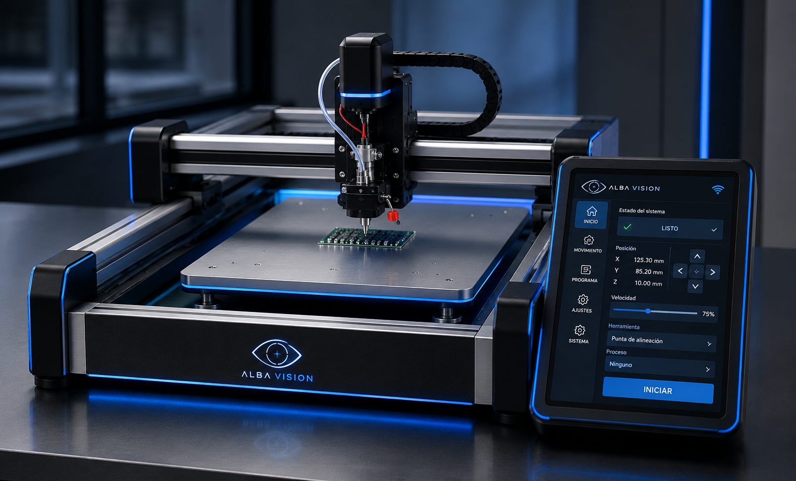

Inspección visual
automatizada
Detección de defectos, validación dimensional y control de calidad repetible en línea.
Construimos sistemas de visión artificial, inteligencia artificial y hardware inteligente para transformar problemas complejos en productos y soluciones reales.
01 / Capacidades
Unimos óptica, modelos de IA y hardware para crear sistemas que observan, interpretan y actúan en condiciones reales.
Detección de defectos, validación dimensional y control de calidad repetible en línea.
Lectura de etiquetas, códigos y caracteres para conectar cada pieza con su historial.
Conteo, tiempos de ciclo y comportamiento de procesos convertidos en decisiones medibles.
Inferencia local de baja latencia para operar sin depender de la nube.
Prototipos funcionales que integran cámaras, sensores, cómputo y diseño electrónico.
02 / Soluciones
Soluciones modulares para validar rápido, integrar con su operación y escalar con evidencia.
Mide ciclos, paros, flujo y utilización con cámaras, sin intervenir la maquinaria. Un panel visual convierte actividad en indicadores accionables.
Inspecciona piezas al ritmo de producción y alerta ante defectos, variantes o ensambles incompletos.
Explorar solución ↗Digitaliza etiquetas, lotes, fechas, códigos y números de serie, incluso en superficies complejas.
Explorar solución ↗Del estudio de factibilidad al equipo instalado: óptica, iluminación, modelos, electrónica y software.
Cuéntanos el reto ↗03 / Proyectos
Ingeniería que sale del laboratorio y se valida en el contexto donde debe funcionar.

La inspección manual de muestras en una máquina de laboratorio limitaba la repetibilidad y consumía tiempo especializado.
Adaptamos un sistema de visión a la máquina existente, con captura controlada y análisis automático de cada muestra.
Un proceso más consistente, trazable y listo para generar datos comparables entre pruebas.
Visión artificial · Iluminación controlada · Procesamiento de imagen · Integración de hardware
04 / Alba Ventures
Convertimos investigación aplicada en productos capaces de abrir nuevas posibilidades, aquí y fuera del planeta.
Tecnología de asistencia visual que interpreta el entorno y lo convierte en información útil para personas con discapacidad visual.
Conocer Unblind ↗Sistemas compactos de visión para observación, navegación y procesamiento inteligente a bordo de satélites CubeSat.
Explorar Alba Space ↗05 / Iniciemos
Cuéntanos el reto. Podemos empezar por una evaluación técnica y una prueba de concepto.
Hablemos de un proyecto ↗